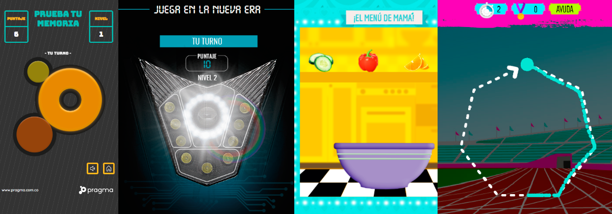

Hi. I'm Jose Alcaraz
An electronic engineer with some experience as frontend dev that would love to help people around the world through technology, science and arts. Welcome to this part of my universe _
Frontend Dev
-
Web Games
JavaScript Canvas PhaserJSGames introduced me to the frontend world. I spent about 4 years being part of amazing web projects for important customers in Latin America using JS (and libraries) among different 2D-based game types such as following patterns, avoiding obstacles, drag and drop, snake, looking for objects on a big map and so on.
-
Websites
ReactJS Angular SVG SassGames introduced me to the frontend world. I spent about 4 years being part of amazing web projects for important customers in Latin America using JS (and libraries) among different 2D-based game types such as following patterns, avoiding obstacles, drag and drop, snake, looking for objects on a big map and so on.
-
Others
-Games introduced me to the frontend world. I spent about 4 years being part of amazing web projects for important customers in Latin America using JS (and libraries) among different 2D-based game types such as following patterns, avoiding obstacles, drag and drop, snake, looking for objects on a big map and so on.